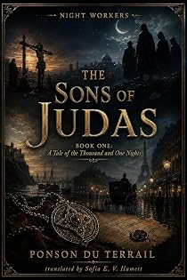

Les Fils de Judas
A tale of the Thousand and One Nights
by Pierre-Alexis Ponson du Terrail · translated by Sofia E. V. Hamettpar Pierre-Alexis Ponson du Terrail · traduit par Sofia E. V. Hamett
The bookLe livre
Eleven o'clock, torrential rain since eight, squalls and lightning, and the île Saint-Louis emptied of everyone. Callebrand has opened his window several times to lean out into the night, muttering: why doesn't Tony come back? He is alone in his laboratory in an old mansion. A chemist, a secret worth killing for, and a Paris novel that keeps promising to turn into the Thousand and One Nights.
Onze heures, une pluie torrentielle depuis huit heures, des rafales et des éclairs, et l'île Saint-Louis vidée de tout le monde. Callebrand a ouvert plusieurs fois sa fenêtre pour se pencher dans la nuit en marmonnant : pourquoi Tony ne revient-il pas ? Il est seul dans son laboratoire, au fond d'un vieil hôtel. Un chimiste, un secret qui vaut un meurtre, et un roman parisien qui n'arrête pas de promettre de tourner aux Mille et Une Nuits.
From the opening pagesLes premières pages
The Vision
Chapter 1
Callebrand had already opened his window several times and leaned out into the night, uneasy, muttering under his breath: “Why doesn’t Tony come back?”
Eleven o’clock had just struck. The rain had been coming down in torrents since eight, tangled with squalls and lightning, and it had emptied the streets of that always solitary quarter they call the île Saint-Louis.
Callebrand was alone in his laboratory. It occupied an old mansion on the corner of the rue des Deux-Ponts, and its casements looked out at once over the Seine and over the far tip of the Île de la Cité, the point that used to be called the Terre-Plein. The laboratory was a great room panelled in wood, its ceiling crossed by heavy painted beams, and it lay in darkness. Only at the centre of it could you make out a single reddish point of light: the embers of a furnace, with a still standing on it.
The furnace threw no glow of its own. But every so often a violent clap of thunder broke outside, a flash of lightning tore open the black vault of the sky, and for one second the whole laboratory blazed and showed its monstrous, picturesque jumble of retorts and jars and phials, of books covering the tables and littering the floor, of parchments scattered here and there, of instruments of physics and chemistry whose brass answered the fire of heaven with myriads of sparks.
And there, standing beside the furnace with his arms folded and his head thrown back, was the master. Callebrand. The great chemist, a modern Flamel, an alchemist born into the age of science and grappling with it hand to hand; the tireless searcher who for twenty years had been tormenting nature to steal one secret out of her.
He was a tall man, his forehead bared by premature baldness, deep lines cut into it by study and long thought. His hollowed cheek, and the mouth that a melancholy smile creased now and then, spoke of that disdain without bitterness which strongly tempered souls feel for the vulgar interests and the petty passions of this world. Was he sixty, or forty? Perhaps nobody could have said. When he was deep in thought, time seemed to lean its heavy knee on him, and you would have taken him for an old man. When he had found something — when a long effort came out at last in one of those victories a man wins over nature, victories without noise and without glitter, and the more glorious for that than anything won on a battlefield — then the stooped frame straightened, his eye flashed, and his whole face lit with the radiance of youth.
Callebrand worked without a light. Darkness suits men in the grip of powerful thoughts. With his eye fixed on the furnace, he seemed to be waiting in anxiety for some mysterious result. Now and then he lifted the lid of the huge cauldron set over the coals, in which a blackish liquor was seething. Then he would say, with something like despair, “Not yet. Have I been wrong all along?”
And then, recalled to the things of this world, he would come back to the window he had left open and plunge his eyes into the night. The rain was still falling and the cobbles shone. Beyond the embankment the Seine rolled its muddy flood past with a loud voice. The wind bent the flames of the street lamps until they looked ready to go out. It was one of those magnificent June storms that turn the streets of a great city into rivers in a couple of hours.
“The poor boy will have taken shelter in somebody’s doorway,” Callebrand murmured, and came back to the furnace.
Then all at once he gave a cry of joy. The cry of a triumph long awaited, long fought for, and often despaired of. A bluish flame, like the flame that lifts off a bowl of punch at night, was running light as a will-o’-the-wisp around the still. Then it changed colour: it went a soft violet, then a vivid rose, then back to a sky blue shot through with silver.
Motionless, sweat on his forehead, his heart hammering, Callebrand stayed three paces from the still with his eyes fixed on that flame. Then the flame died and everything sank back into darkness. Still he did not dare to move. You would have said some terrible emotion had hold of him.
At last he made a supreme effort, ran to the furnace, stooped, and thrust an iron rod down into the coals. He left it there a few minutes, drew it out white-hot, and held it up to a candle. Then he made a bellows of his swollen cheeks, and a spark torn by that powerful breath from the glowing iron lit the wick.
Then, still trembling, pale, his eyes on fire, he lifted the lid of the cauldron. The blackish matter was dazzling now, like silver with flakes of crystal stirred through it.
And the master filled his chest, his nostrils flaring, and pronounced the fated word: “Eureka!”
Callebrand had just found what he had been looking for, with heroic obstinacy, for twenty years.
And while he stood there shaking, bent over his work, the laboratory door opened and a young man came in, streaming with rain, and stopped a moment on the threshold. The master ran to him and caught his hand.
“Tony! Tony!” he said. “I’ve found it.”
“Ah,” said the young man, and his thin, sallow face went livid.
“I’ve found it!” the scientist repeated.
“And what is it you’ve found, master?” the young man asked, in a voice that had gone strange.
“The great secret I was hunting for. The one that will make me one of the great men of this century and make my name immortal.”
And the scientist crushed his beloved pupil to his chest — the pupil whose heart, at that very moment, was being bitten through by the most infernal and the basest of all the passions: envy.
Chapter 2
Who was this young man?
His name was Tony, and he had no other. He was one of those lost children whom the world, without hearing its own irony, calls a foundling — a child who has been found. Callebrand had come across him one evening twenty years before, crying and starving in a street of one of the most crowded quarters of Paris, la Villette. The boy’s pretty face had won the scientist over. He had taken him home, had all but adopted him, and had given him bread first and an education afterwards.
Tony had been Callebrand’s best student in the days when Callebrand still lectured. When Callebrand gave up his chair to devote himself entirely to the pursuit of great discoveries, Tony stayed on in the house as his laboratory assistant.
To look at this pale young man with the fair hair, the light grey eye and the thin lips armed with a bitter smile, you guessed at once that something was gnawing away at him inside. Tony felt his own obscurity, and he cursed his luck. Tony was poor, and he would have liked to be rich. Up to this day, what had his work, his research, his study ever been but one more stone added to his master’s building? And who had the benefit of it?
The excerpt ends here — about 1,243 words of the published edition.L'extrait s'arrête ici — environ 1,243 mots de l’édition parue.
KindlePaperbackBrochéContextContexte
Rocambole made Ponson du Terrail famous and then swallowed the rest of his work. He wrote dozens of other novels — the Second Empire demi-monde, forest melodramas, police memoirs, Regency intrigue, Orientalist serials — and almost none of them survived in English. Lost French Thrillers recovers them, in the order they can be edited, with the same care given to the Rocambole cycle.
Rocambole a rendu Ponson du Terrail célèbre, puis a englouti le reste de son œuvre. Il a écrit des dizaines d'autres romans — le demi-monde du Second Empire, des mélodrames forestiers, des mémoires de police, des intrigues de la Régence, des feuilletons orientalistes — et presque aucun n'a survécu en anglais. Lost French Thrillers les exhume, dans l'ordre où ils peuvent être établis, avec le soin donné au cycle de Rocambole.
The whole programmeTout le programme